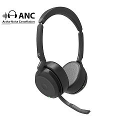

VT SCAPE 65 без донгла
Цена носит информационный характер — актуальную стоимость и наличие уточняйте у менеджера.
VT SCAPE 65 — Bluetooth-гарнитура с поддержкой технологии ANC Собрана из премиальных материалов и создана с учетом запросов самых требовательных клиентов. Выполнена на аналогичной элементной базе как флагманская VT FLOW, но отличается фиксированным корпусом без возможности складывания и отсутствием в комплекте USB-донгла, что делает её более привлекательной по цене.
VT SCAPE 65 весит 140 г. Благодаря системе из 4 MEMS микрофонов гарнитура поддерживает активное шумоподавление, эффективно устраняет посторонние шумы, подавая сигнал на динамики в противофазе.
Гарантия — 2 года.
Характеристики
Портативная складная конструкция
Складная конструкция позволяет гарнитуре легко помещаться в сумку.
Комфорт в течение всего дня
Ультрамягкие амбушюры обеспечивают комфортное ношение с учетом анатомических особенностей пользователя. Даже во время длительных совещаний или напряженных рабочих сессий гарнитура позволяет полностью сосредоточиться на текущей задаче.
Сосредоточенность и безупречные коммуникации
Благодаря технологии VT ImmersiveClear и работе функции гибридного активного шумоподавления (ANC) пользователь может полностью сосредоточиться на коммуникации. Двойные микрофоны с поддержкой технологии VT DeliverClear отфильтровывают фоновый шум, гарантируя четкость голоса даже в шумных помещениях, таких как офисы или кафе. Если пользователю нужно быть в курсе происходящего вокруг, функция HearThrough позволяет слышать окружающие звуки, не снимая гарнитуру.
Штанга микрофона
Штанга микрофона имеет скрытую конструкцию, которая складывается, когда гарнитура не используется. Во время звонков можно поднять штангу микрофона, чтобы отключить звук, или потянуть ее вниз, чтобы включить звук. Это обеспечивает быстрое и простое управление звуком.
Кристально чистый звук
VT SCAPE 65 обеспечивает высококачественный звук с помощью сверхширокополосных динамиков и технологии HD voice как при проведении встреч, так и при прослушивании музыки.
Преимущества устройства
- Портативность
- Ультрашумоподавление
- Максимальный комфорт
Умные датчики для легкого управления
Благодаря встроенным датчикам VT SCAPE 65 автоматически приостанавливает воспроизведение музыки, когда пользователь снимает гарнитуру, и возобновляет ее, когда гарнитура снова надета.
Длительное время работы от аккумулятора
VT SCAPE 65 обеспечивает до 50 ч воспроизведения музыки и 28 ч в режиме разговора при полной зарядке. Благодаря возможности быстрой зарядки гарнитура полностью заряжается всего за 2 ч, а быстрая 30-минутная зарядка обеспечивает до 45% заряда.
Технические характеристики
Светодиодные индикаторы
- Индикатор занятости
- Состояние сопряжения
- Входящий вызов
Ношение и комфорт
Съемные и удобные амбушюры с ультрамягкой перфорированной пеной
Микрофон
Функция HearThrough позволяет слышать собеседника во время разговора
Частота микрофона
- Аналоговый: 20 Гц – 10 кГц
- Цифровой: 20 Гц – 10 кГц
Тип микрофона
- 4 аналоговых MEMS
- 2 цифровых MEMS (стерео)
Динамик
- Размер динамика: 28 мм
- Диапазон частот динамика: 20 Гц – 20 кГц
- Полоса пропускания динамика (режим прослушивания музыки): 20 Гц – 20 кГц
- Полоса пропускания динамика (режим разговора): 100 Гц – 8 кГц
Совместимость
Совместимость с платформами UC с помощью донгла BT200U: Microsoft Teams, 3CX, Avaya workplace, Cisco Jabber, Counterpath Bria и др.
Экономия энергии
После 4 ч бездействия гарнитура переходит в спящий режим и выключается после 24 ч.
Аккумулятор
- Время прослушивания музыки: до 50 ч с выключенной функцией ANC, 40 ч с включенной функцией ANC
- Время разговора: до 28 ч с выключенной функцией ANC и включенной функцией Busylight, 25 ч с включенными функциями ANC и Busylight
- Время зарядки: 2 ч
- Уровень заряда батареи после 30 мин зарядки: до 45%
Физические параметры
- Размеры упаковки (Ш x В x Г): 190 x 37 x 196 мм
- Вес упаковки: 336 г
- Вес нетто (сама гарнитура): 140 г
- Рабочая температура: -5~45 °C
- Температура хранения: -10~55 °C